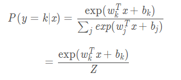

NCE
负采样可以看成 NCE 的特化，所以有必要先讲一下 NCE。
在 Softmax 回归中，样本属于某个分类的概率是：

也就是说，要计算它属于某个分类的概率，就要把所有分类的概率都计算出来。有的时候算力计算一个是够的，但不够计算这么多。
NCE 的想法很简洁，把多分类变成二分类，还用相同的参数。
我们需要在数据集上采样。对于每个样本，它的特征为 x，选取它所属的类别 y0，并根据某个分布 N(y)选取 n 个其它类别 y1 ... yn。然后把每个 (x,yi) 当做新样本的特征。
然后给每个新样本一个标签 d，如果 x属于 yi，那么 d=1，否则 d=0。

然后整个问题就变成了优化 P(d=1∣y,x)。
我们观察到，在新的数据集中，如果我们选取 d=1的样本，它们的 x,y 和原始样本一样。也就是：
P(y∣x,d=1)=P0(y∣x)
为了避免混淆，把原数据集上的那个函数加了个下标 0。
如果我们选取 d=0的样本，它们的 y就是分布 N(y)。
P(y∣x,d=0)=N(y)
还有，对于每个 x，d总会有一个 1 和 n 个 0。

把它们乘一起，就得到了联合分布：

然后计算需要优化的那个函数：

负采样
在此基础上做了两个改动：
第一，把 N(y) 变成所抽样标签上的均匀分布，那么 nN(y)=1。
第二，把配分项 Z 变成模型的一个参数 z。
于是：

然后在多次试验中发现 z 始终等于 1，就把这项去掉了。现在它就是二分类了。

优化的时候，我们随机选个 x。由于 y是均匀的，我们再随机选个 k，计算 P(d=1∣y,x)。之后再用它和 d算交叉熵损失，用梯度下降来更新参数即可。